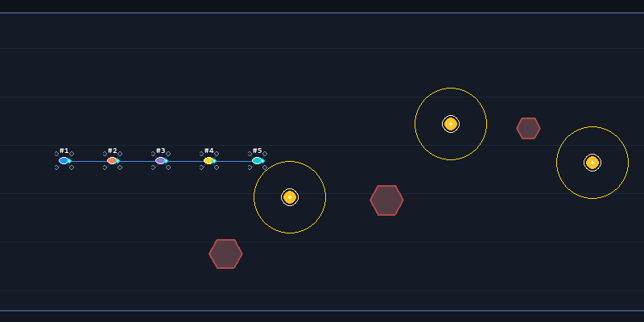

Tutorial 02: Heuristic Reactive Policy & Evaluation
Training deep neural policies from scratch is computationally expensive. Before reaching for learning algorithms, it helps to establish a transparent, rule-based baseline so you have a clear performance floor.
This tutorial guides you through:
- Understanding why heuristic baselines are essential in scientific MARL research.
- Deconstructing the 16-dimensional observation vector into actionable control features.
- Designing a 4-tier hierarchical reactive policy that prioritizes safety over mission objectives.
- Implementing the white-box
ReactiveSwarmPolicyclass. - Running a multi-seed comparative benchmark against random exploratory actions.
1. Why Benchmark Against a Rule-Based Heuristic?
A common failure mode in MARL research is assuming that a trained neural policy's performance indicates successful coordination, when the agent may merely have learned trivial obstacle avoidance.
A deterministic heuristic baseline serves three core scientific purposes:
- Performance Floor: Sets a minimum viable score. Any learning algorithm (PPO, MADDPG) that fails to outperform the heuristic indicates suboptimal hyperparameters or flawed reward shaping.
- Coordination Isolator: A purely decentralized reactive policy does not communicate with teammates. Comparing it against a communicative MARL policy isolates the exact marginal gain attributable to inter-agent communication.
- Environment Sanity Check: Verifies that the procedural obstacles, collision hitboxes, and target waypoints are physically navigable under standard kinematics without requiring machine learning.
2. Deconstructing the 16-Dimensional Observation Vector
Each UAV receives a continuous vector \(\mathbf{o}_i \in [-1.0, 1.0]^{16}\) at every step. To design a reactive controller, we partition this vector into four functional sensory modalities:
Observation Vector: [0: Altitude | 1-7: LiDAR Rays | 8-11: Target | 12-15: Neighbor]
Index 0 Indices 1 to 7 Indices 8-11 Indices 12-15
1. Normalized Flight Altitude
- \(y_{\text{norm}} \approx 0.0\) indicates dangerous proximity to the upper ceiling (\(y_{\text{ceiling}} = 15\text{ px}\)).
- \(y_{\text{norm}} \approx 1.0\) indicates dangerous proximity to the ground base plane (\(y_{\text{floor}} = 385\text{ px}\)).
- \(y_{\text{norm}} \approx 0.5\) represents the vertical median of the corridor.
2. Forward 7-Ray LiDAR Rangefinder
The rangefinder casts 7 rays across a \(120^\circ\) forward field of view (\(-60^\circ\) up-forward to \(+60^\circ\) down-forward) up to \(R_{\max} = 400\text{ px}\). Each feature reports normalized distance \(d_k^* / R_{\max} \in [0.0, 1.0]\):
| Feature Index | Ray Index | Polar Angle \(\theta_k\) | Orientation | Primary Hazard Detected |
|---|---|---|---|---|
1 |
Ray 0 | \(-60^\circ\) | Steep up-forward | Ceiling boundary, high suspended structures |
2 |
Ray 1 | \(-40^\circ\) | Moderate up-forward | Overhead towers, upper building roofs |
3 |
Ray 2 | \(-20^\circ\) | Shallow up-forward | Impending overhead barriers |
4 |
Ray 3 | \(0^\circ\) | Horizontal forward | Frontal obstacle bodies, mid-air hazards |
5 |
Ray 4 | \(+20^\circ\) | Shallow down-forward | Impending ground barriers |
6 |
Ray 5 | \(+40^\circ\) | Moderate down-forward | Ground structures, building edges |
7 |
Ray 6 | \(+60^\circ\) | Steep down-forward | Ground surface, low structural bases |
3. Nearest Target Waypoint
obs[8](\(\Delta x_{\text{tgt}} / W\)): Relative horizontal distance. Positive when target is ahead (to the right).obs[9](\(\Delta y_{\text{tgt}} / H\)): Relative vertical distance \((y_{\text{tgt}} - y_i) / H\).- \(\Delta y_{\text{tgt}} > 0 \implies\) Target is below the drone \(\implies\) descend (
Action.DOWN). - \(\Delta y_{\text{tgt}} < 0 \implies\) Target is above the drone \(\implies\) ascend (
Action.UP). obs[10](\(d_{\text{tgt}} / \text{diag}\)): Normalized Euclidean distance to target.obs[11](\(\mathbf{1}_{\text{in_range}}\)): Binary flag (\(1.0\) if \(d_{\text{tgt}} \le 45\text{ px}\), else \(0.0\)).
4. Nearest Neighbor Teammate
- Relative spatial displacement \([\Delta x_{\text{nbr}} / W, \Delta y_{\text{nbr}} / H, d_{\text{nbr}} / \text{diag}]\) and binary communication link flag \(\mathbf{1}_{\text{in_comm}}\) (\(1.0\) if \(d_{\text{nbr}} \le 180\text{ px}\)).
3. Hierarchical Control Architecture
A robust flight controller must prioritize survival over mission rewards. A drone that crashes cannot photograph future targets. We structure the policy into a 4-tier priority decision tree:
flowchart TD
A["Receive Observation Vector"] --> B{"Tier 1: Boundary Proximity?<br/>y_norm < 0.15 or y_norm > 0.85"}
B -- Yes --> C["Execute Emergency Boundary Evasion<br/>(Force DOWN if near ceiling, UP if near floor)"]
B -- No --> D{"Tier 2: LiDAR Hazard?<br/>min(LiDAR) < 0.35"}
D -- Yes --> E["Execute Obstacle Evasion<br/>Compare Upper vs. Lower Ray Clearance"]
D -- No --> F{"Tier 3: Target Seeking?<br/>abs(target_dy) > 0.03"}
F -- Yes --> G["Steer Toward Target<br/>(DOWN if dy > 0, UP if dy < 0)"]
F -- No --> H["Tier 4: Corridor Centering<br/>Gently drift toward y_norm ≈ 0.5"]Tier 1: Emergency Boundary Avoidance
If the drone penetrates the ceiling buffer zone (\(y_{\text{norm}} \le 0.15\)), it must immediately dive (Action.DOWN). If it penetrates the floor buffer zone (\(y_{\text{norm}} \ge 0.85\)), it must immediately climb (Action.UP).
Tier 2: LiDAR Obstacle Evasion
If any LiDAR ray detects an obstacle closer than a critical safety distance \(d_{\text{crit}} = 0.35\) (\(140\text{ px}\)):
- Compute aggregate upper clearance: \(\bar{d}_{\text{upper}} = \frac{1}{3}(d_0 + d_1 + d_2)\).
- Compute aggregate lower clearance: \(\bar{d}_{\text{lower}} = \frac{1}{3}(d_4 + d_5 + d_6)\).
- If \(\bar{d}_{\text{upper}} > \bar{d}_{\text{lower}}\), climb (
Action.UP) toward open airspace. - Otherwise, dive (
Action.DOWN) toward lower open airspace.
Tier 3: Target Interception
When no immediate structural collision threatens the drone, align vertical altitude with the target waypoint:
- If \(\Delta y_{\text{tgt}} > +0.03\), target is below: select
Action.DOWN. - If \(\Delta y_{\text{tgt}} < -0.03\), target is above: select
Action.UP. - If \(|\Delta y_{\text{tgt}}| \le 0.03\), altitude matches: maintain level flight (
Action.STAY).
Tier 4: Corridor Median Centering
If no target is in sight or the path is clear, maintain altitude near the vertical corridor center (\(y_{\text{norm}} \approx 0.5\)) to maximize defensive reaction buffers against future procedural obstacles.
4. Policy Implementation
Here is the complete, self-contained Python implementation of the ReactiveSwarmPolicy:
"""
ReactiveSwarmPolicy: A rule-based, white-box controller for ScrollSwarm UAVs.
"""
import numpy as np
from scrollswarm.agent import Action
class ReactiveSwarmPolicy:
"""
Hierarchical rule-based reactive policy for autonomous UAV navigation.
Parameters:
ceiling_margin: Normalized altitude threshold below which UP is forbidden.
floor_margin: Normalized altitude threshold above which DOWN is forbidden.
lidar_threshold: Normalized distance threshold triggering emergency evasion.
target_deadband: Deadband for target vertical alignment.
"""
def __init__(
self,
ceiling_margin: float = 0.15,
floor_margin: float = 0.85,
lidar_threshold: float = 0.35,
target_deadband: float = 0.03,
):
self.ceiling_margin = ceiling_margin
self.floor_margin = floor_margin
self.lidar_threshold = lidar_threshold
self.target_deadband = target_deadband
def act(self, observation: np.ndarray) -> int:
"""
Computes discrete action from the 16-dimensional continuous observation.
Args:
observation: 16-dimensional float32 array.
Returns:
Integer action: 0 (UP), 1 (STAY), or 2 (DOWN).
"""
y_norm = observation[0]
lidar = observation[1:8]
target_dy = observation[9]
# -------------------------------------------------------------
# Tier 1: Hard Boundary Constraints
# -------------------------------------------------------------
if y_norm <= self.ceiling_margin:
return Action.DOWN
if y_norm >= self.floor_margin:
return Action.UP
# -------------------------------------------------------------
# Tier 2: Forward LiDAR Obstacle Evasion
# -------------------------------------------------------------
min_obstacle_dist = np.min(lidar)
if min_obstacle_dist < self.lidar_threshold:
# Aggregate upper rays (0, 1, 2) vs lower rays (4, 5, 6)
upper_clearance = np.mean(lidar[0:3])
lower_clearance = np.mean(lidar[4:7])
if upper_clearance > lower_clearance:
return Action.UP
else:
return Action.DOWN
# -------------------------------------------------------------
# Tier 3: Target Waypoint Tracking
# -------------------------------------------------------------
if abs(target_dy) > self.target_deadband:
return Action.DOWN if target_dy > 0 else Action.UP
# -------------------------------------------------------------
# Tier 4: Corridor Equilibrium Centering
# -------------------------------------------------------------
if y_norm < 0.45:
return Action.DOWN
elif y_norm > 0.55:
return Action.UP
return Action.STAY
5. Comparative Benchmark: Random vs. Reactive
To evaluate the policy, we run a multi-seed experiment comparing 5 random exploration episodes against 5 reactive heuristic episodes over a 500-step horizon (\(T = 500\)):
"""
Comparative benchmark: Random Policy vs. ReactiveSwarmPolicy.
"""
from typing import Dict, Any, List
import numpy as np
from scrollswarm import ScrollSwarmEnv
from scrollswarm.comm import TopologyType
from scrollswarm.agent import Action
def evaluate_policy(policy_name: str, policy_fn, num_episodes: int = 5, max_cycles: int = 500):
episode_returns: List[float] = []
episode_survivals: List[float] = []
episode_targets: List[int] = []
total_crashes = 0
total_drones = 0
for seed in range(num_episodes):
env = ScrollSwarmEnv(
num_agents=5,
max_cycles=max_cycles,
comm_topology=TopologyType.CHAIN,
target_reward=1.0,
crash_penalty=10.0,
step_reward=0.01,
render_mode=None,
)
observations, infos = env.reset(seed=100 + seed)
episode_reward = 0.0
# Persistent tracker to avoid KeyError on culled agents
tracker = {
a: {"steps": 0, "targets": 0, "crashed": False}
for a in env.possible_agents
}
while env.agents:
# Query policy
actions = {
a: policy_fn(observations[a], env.action_space(a))
for a in env.agents
}
observations, rewards, terminations, truncations, infos = env.step(actions)
episode_reward += sum(rewards.values())
for a, info in infos.items():
tracker[a]["steps"] = info["steps_alive"]
tracker[a]["targets"] = info["targets_photographed"]
if info["collision"] is not None:
tracker[a]["crashed"] = True
env.close()
mean_survival = np.mean([d["steps"] for d in tracker.values()])
total_targets = sum(d["targets"] for d in tracker.values())
crashes = sum(1 for d in tracker.values() if d["crashed"])
total_crashes += crashes
total_drones += len(tracker)
episode_returns.append(episode_reward)
episode_survivals.append(mean_survival)
episode_targets.append(total_targets)
print(f"\n=== Evaluation: {policy_name} ({num_episodes} Episodes) ===")
print(f" Mean Episodic Return: {np.mean(episode_returns):8.2f} ± {np.std(episode_returns):.2f}")
print(f" Mean Survival Steps: {np.mean(episode_survivals):8.1f} ± {np.std(episode_survivals):.1f} / {max_cycles}")
print(f" Mean Targets Photographed: {np.mean(episode_targets):8.2f} ± {np.std(episode_targets):.2f}")
print(f" Overall Drone Crash Rate: {total_crashes / total_drones * 100:7.1f}% ({total_crashes}/{total_drones})")
if __name__ == "__main__":
from reactive_policy import ReactiveSwarmPolicy
# 1. Evaluate Random Policy Baseline
evaluate_policy("Random Action Policy", lambda obs, space: space.sample())
# 2. Evaluate Reactive Swarm Policy
heuristic = ReactiveSwarmPolicy()
evaluate_policy("Reactive Swarm Policy", lambda obs, space: heuristic.act(obs))
Visual Flight Comparison (Seed 101, 300 Steps)
The dynamic execution of both policies can be visually compared below:

Reactive Swarm Policy: All 5 drones survive the full 300-step corridor (0 crashes), dynamically voting on LiDAR ray clearances to evade impending ground/overhead structures and ascending/descending to photograph 2 target waypoints (Return: +17.00).
Random Action Baseline: Drones oscillate erratically without obstacle awareness. Drones #4 (step 133) and #3 (step 224) collide into procedural structures and crash immediately (Return: -6.45).
Empirical Results Summary
Running the evaluation script across 5 independent seeds (seeds 100 to 104) over a 500-step episode horizon yields the following benchmark metrics:
| Metric | Random Action Baseline | Reactive Swarm Policy | Performance Delta |
|---|---|---|---|
| Mean Episodic Return | \(-28.55 \pm 10.50\) | \(-10.39 \pm 18.00\) | \(+18.16\) reduction in net crash penalties |
| Mean Survival Horizon | \(257.9 \pm 66.8\text{ steps}\) | \(356.7 \pm 75.7\text{ steps}\) | \(+98.8\text{ steps}\) (\(+38.3\%\) longer flight time) |
| Mean Targets Photographed | \(0.60 \pm 0.49\) | \(1.80 \pm 0.75\) | \(\mathbf{3.0\times}\) increase in mission reconnaissance |
| Drone Crash Rate | \(84.0\%\) (\(21/25\) dead) | \(60.0\%\) (\(15/25\) dead) | \(24.0\text{ percentage point}\) reduction |
| Inference Latency | \(\sim 0.002\text{ ms}\) | \(\sim 0.013\text{ ms}\) | Negligible CPU overhead |
Scientific Analysis of the Results
- Survival Gain: The heuristic's Tier 1 boundary avoidance and Tier 2 LiDAR clearance voting prevent premature collisions against simple barriers, increasing mean survival from 257.9 steps to 356.7 steps.
- Reconnaissance Yield: Target tracking (Tier 3) successfully aligns vertical altitude with nearby target waypoints, tripling the mean photo acquisition from 0.60 to 1.80 targets per episode.
- The Limits of Memoryless Reactive Control: Despite outperforming random exploration, the reactive policy still experiences a 60% crash rate over 500 steps. Because it is a memoryless, 1-step reactive heuristic without lookahead planning or inter-agent coordination:
- Drones cannot anticipate bottlenecks where procedural obstacles require multi-step coordinated evasive maneuvers.
- Without inter-agent communication, drones cannot coordinate spatial dispersion across the corridor gap.
- This performance gap establishes a meaningful benchmark lower bound that cooperative multi-agent RL (e.g., MAPPO, QMIX, GNN policies) must learn to surpass.
Next Steps
With a robust single-drone reactive controller established:
- Proceed to Tutorial 03: PyG & GNN Integration to incorporate relational Graph Neural Networks (GNNs), sharing neighbor observations across communication topologies to solve cooperative target reconnaissance.